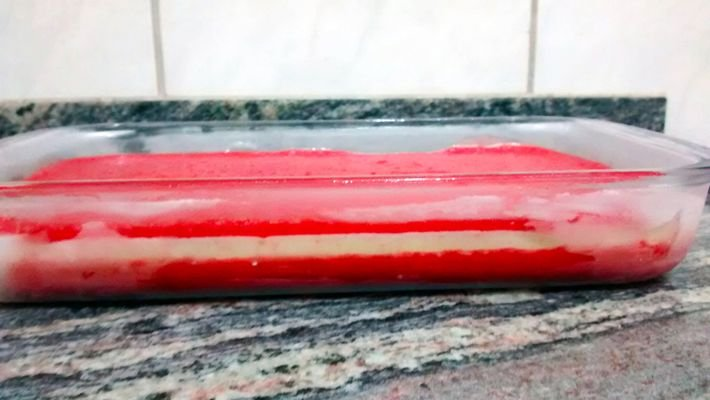

PALETA MEXICANA NA TRAVESSA

ingredientes:
- sorvete de morango
- 600 g de morangos limpos e lavados
- 6 colheres de sopa de açúcar de confeiteiro
- suco de 2 limões
- recheio de leite condensado
- 2 latas de leite condensado
- 4 colheres de sopa de manteiga
modo de preparo:
- SORVETE DE MORANGO:
- Bata todos os ingredientes até obter um suco homogêneo.
- Em uma travessa, coloque metade do suco para formar uma primeira camada e leve ao freezer para endurecer.
- Reserve o restante do suco para depois.
- RECHEIO DE LEITE CONDENSADO:
- Em uma panela, junte todos os ingredientes e leve ao fogo baixo por, aproximadamente, 10 minutos ou até atingir o ponto de um brigadeiro mole e espere esfriar.
- Após esfriar, despeje o recheio de leite condensado por cima da primeira camada do suco de morango já congelado e leve de volta ao freezer.
- Despeje o restante do suco de morango por cima do recheio de leite condensado já endurecido e leve novamente ao freezer.
- Sirva depois de gelado.